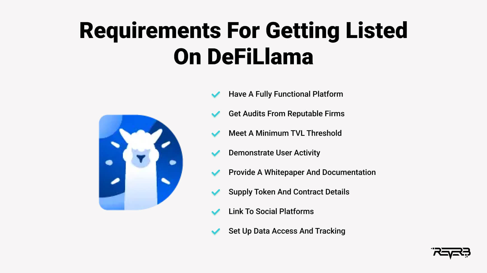

Crystal Balls and Crypto: Can Swap Llama 's Swap Data Really Predict the Future?
Remember that time I tried to predict the avocado toast market? Yeah, me neither. But predicting the crypto market? That’s a whole different kettle of (very volatile) fish. And lately, I’ve been poking around DefiLlama, specifically their swap data, wondering if it holds any clues to the future. Is it a magic 8-ball for DeFi? Probably not. But it’s certainly more interesting than watching paint dry (unless that paint is somehow magically tied to the price of ETH, then… never mind).
DefiLlama, for the uninitiated, is a treasure trove of information on the decentralized finance (DeFi) space. It aggregates data from various protocols, giving you a pretty comprehensive overview. And their swap data? That's where the fun (and potential for headaches) begins. We’re talking about tracking massive amounts of token swaps happening across different chains, revealing trends in user behavior and, potentially, indicating shifts in market sentiment.
Now, I’m not going to pretend this is some foolproof method. Predicting market trends is, let's be honest, about as reliable as my attempts at sourdough bread making (burnt, mostly). But by analyzing the swap volume for specific tokens or even entire protocols, you might glimpse something interesting. For instance, a sudden surge in swaps for a particular token could signal rising interest, potentially leading to a price increase. Conversely, a dramatic drop might indicate… well, you get the picture. It’s like watching a slow-motion car crash – fascinating, terrifying, and potentially educational.
The challenge, however, lies in the noise. There's always so much noise. Are those spikes real indicators, or just whales doing their whale thing? Is the increased volume driven by genuine adoption or sophisticated market manipulation? These are crucial questions, and DefiLlama alone can't answer them. You need to combine this data with other factors – macroeconomic conditions, regulatory news, even the latest tweets from influential figures (yes, even those cryptic Elon Musk tweets).
I spent weeks sifting through charts, feeling like a detective in a data-driven noir film. I'd zoom in on specific protocols, squinting at charts like they held the secrets to the universe. Sometimes, I saw patterns that seemed significant – a clear correlation between swap volume and price movement. Other times, I saw nothing but random fluctuations, reminding me that maybe, just maybe, I should stick to less volatile hobbies like knitting. (Although, knitting patterns can be surprisingly complex too…)
The truth is, DefiLlama's swap data is a tool, not a crystal ball. It provides valuable insights, but it's only one piece of the puzzle. It's like having a super-powered telescope; it helps you see further, but it doesn't guarantee you'll find the treasure. You still need the map, the compass, and perhaps, a bit of luck.
So, did I crack the code to predicting market trends? No. Did I learn something? Absolutely. I learned that analyzing DeFi data is a complex, challenging, and sometimes frustrating process. It’s a bit like trying to assemble IKEA furniture without the instructions – a lot of head-scratching, a few expletives, and the occasional feeling of impending doom. But amidst the chaos, there's a certain beauty in the process, a satisfaction in trying to make sense of the ever-changing landscape of the crypto world. And hey, at least I haven't burnt any avocados yet. That’s a win, right?
Data-Driven Decisions: My Accidental Love Affair with DeFi Llama's Swap History
Okay, so picture this: I'm knee-deep in spreadsheets, drowning in a sea of crypto transaction data. My goal? To understand the why behind certain DeFi trends. Was it whales manipulating the market? A sudden surge in meme coin popularity? Or, you know, aliens? (Okay, probably not aliens, but a guy can dream, right?) I felt like a detective in a particularly messy case file, armed with nothing but a magnifying glass and a caffeine IV drip.
Then, I discovered DeFi Llama. Specifically, their swap history data. It was like finding the Rosetta Stone after years of deciphering hieroglyphics. Suddenly, all that messy data started to make sense. It wasn't just numbers anymore; it was a narrative. A story unfolding in real-time, showing the collective decisions of thousands, maybe millions, of DeFi users.
Now, I know what you might be thinking: "Swap history data? Sounds boring." Trust me, it's not. It's like a voyeuristic window into the soul (or maybe the wallet) of the decentralized finance world. You can see the ebb and flow of liquidity, the popularity of different protocols, and even get a sense of the overall market sentiment. It's a bit like reading tea leaves, except instead of tea leaves, it's thousands of individual swap transactions. And instead of predicting your love life, you're trying to predict…well, the next big thing in DeFi. Which, let's be honest, is almost as unpredictable.
One of the most fascinating things I discovered was the sheer volume of data. It's overwhelming at first, a tsunami of information. But once you start to filter and analyze it, you start to see patterns emerge. For instance, I noticed a clear correlation between the price of a certain token and the volume of swaps involving that token on a specific DEX. Mind blown. Okay, maybe not mind blown, but definitely a satisfying "aha!" moment.
Of course, it’s not all sunshine and rainbows. Analyzing DeFi Llama's swap history requires a bit of technical know-how. You need to understand how to interpret the data, filter out noise, and avoid drawing premature conclusions. There are also limitations. The data is only as good as the DEXs reporting it, and we all know how the crypto world loves its surprises. It’s a constant learning process, constantly evolving and updating.
But the potential insights are enormous. Imagine being able to anticipate market trends before they happen, to identify undervalued tokens, or to make smarter decisions about where to allocate your capital. This isn't about predicting the future – that’s impossible. It's about making informed decisions based on real-world data, rather than gut feelings or internet rumors. And that’s a huge difference.
Writing this article has been, unexpectedly, a journey of reflection. It started as a simple exploration of a powerful dataset, but it became something more. It’s a reminder that even in the seemingly chaotic world of decentralized finance, patterns and insights can be found, if you know where to look and are willing to put in the time. It’s not about finding the Holy Grail of DeFi; it’s about building a better understanding, one data point at a time. And hey, maybe even catching a glimpse of that next big thing before everyone else does. Though, I’m still holding out for those alien-related market manipulations. Just saying.
Decoding the Crypto Chaos: My Adventures with DefiLlama's Swap Dashboards
Okay, confessing time. Last week, I was knee-deep in a particularly frustrating attempt to track my (admittedly small) bag of obscure DeFi tokens. It felt like trying to untangle a Christmas light chain after a particularly enthusiastic cat attack – a chaotic mess of flashing lights and cryptic symbols. Then, a friend casually mentioned DefiLlama's swap dashboards. Suddenly, the tangled mess started to look… manageable. Maybe even…interesting?
DefiLlama, for the uninitiated (or for those who, like my past self, were blissfully unaware), is basically a Google for decentralized finance. It’s a treasure trove of data, allowing you to track everything from the total value locked (TVL) in various protocols to, crucially for my recent existential crisis, the flow of tokens across different DEXs. And their swap dashboards? They're the key to understanding the intricate dance of digital assets.
Think of it like this: imagine you're a detective investigating a high-stakes art heist. You don't just want to know what's missing, you want to trace the stolen goods, follow the trail of breadcrumbs left behind. DefiLlama’s swap dashboards are your crime scene investigation kit – they let you see the movement of tokens, identifying patterns, pinpointing potential culprits (well, maybe not culprits, but certainly interesting trading activity).
Now, I'm no expert – I’m still figuring out the nuances myself. Honestly, the sheer volume of data can be overwhelming at first. It’s like staring at a spreadsheet created by a hyperactive spreadsheet-loving octopus. But after a few hours of poking around, I started to see the magic. You can see which DEX is dominating a particular token's trading volume. You can see the average swap size, offering a glimpse into the types of traders involved (are they whales or shrimps?). It's like peeking into the beating heart of the DeFi ecosystem.
One thing that initially confused me was the difference between "volume" and "total value swapped". At first glance, I thought they were interchangeable, but a quick Google (yes, even DeFi Llama needs Google sometimes) clarified things. Volume is simply the number of trades, while the total value swapped actually represents the value of the assets exchanged. This distinction is vital – imagine a DEX with thousands of tiny trades versus one with fewer, but much larger ones; very different user bases, likely.
But here’s the thing: Even with all this data, it's not a crystal ball. You can't definitively predict future price movements based solely on swap data. Trying to do so is like predicting the weather based solely on the number of birds chirping outside your window – you might get lucky, but it's not a reliable method. It's more about understanding the context. Where is a token primarily being traded? Is its volume increasing or decreasing? These questions, answered by DefiLlama, provide valuable insights into a token's current state and potential trajectory.
My journey with DefiLlama’s swap dashboards hasn't been flawless. I’ve certainly spent time feeling utterly lost in a sea of numbers and charts (think less Indiana Jones, more Indiana Jones getting hopelessly lost in a particularly confusing jungle). But the feeling of finally making sense of the data, of unraveling that tangled Christmas light chain, is incredibly satisfying. It’s a process, a learning curve, a testament to the fascinating complexity of DeFi and a reminder that sometimes, the most valuable insights come from getting your hands dirty in the data. So, put on your detective hats, people, and get exploring!
Chasing Ghosts in DeFi: Can DefiLlama's Swap Data Really Predict the Next Big Thing?
So, remember that time I tried to time the market? Yeah, me neither. Seriously though, we’ve all been there, haven't we? Staring at charts, convinced we've cracked the code, only to watch our meticulously planned trade evaporate faster than a glass of water in the Nevada desert. The quest for the holy grail of market prediction is a siren song, and DeFi, with its wild swings and often opaque mechanics, is especially tempting. But what if there was a slightly less mystical, slightly more data-driven way to sniff out momentum? What if DefiLlama’s swap data could be our crystal ball (a slightly scratched, sometimes blurry one, but a crystal ball nonetheless)?
DefiLlama, for the uninitiated, is a treasure trove of DeFi data. It aggregates information from various chains and protocols, offering a bird’s-eye view of the space. And nestled within this wealth of information lies the potential for…well, let’s call it "educated guessing" regarding momentum trades. We're not talking about some foolproof algorithm here. This isn't a get-rich-quick scheme; more like a "get-slightly-less-poor-maybe-eventually" strategy. I’m already bracing for the inevitable comments pointing out my naïve optimism.
The core idea is simple, almost embarrassingly so: look at the swap volume. Massive, sudden spikes in a particular token's swap volume on DefiLlama could suggest a developing trend. People are trading, right? That implies interest, potentially signaling a bullish momentum swing. Think of it like watching a crowd surge towards a particular food stall at a festival – something delicious (or at least, hyped) must be happening there.
But it's not that straightforward, is it? This isn't just about spotting a spike; it’s about understanding why the spike happened. Was it a genuine surge in demand, or a whale manipulating the market? Did some influencer tweet about it? Was it a flash crash disguised as a pump? Differentiating between organic growth and orchestrated hype is crucial, and that's where things get tricky.
I've spent a fair amount of time experimenting, and I've found that looking at volume across multiple exchanges (available through DefiLlama’s aggregator) gives a more robust picture. A single exchange showing high volume might be an anomaly, but consistent high volume across several platforms suggests something bigger is afoot. It’s like getting corroborating witness testimony in a detective novel – you’re building a stronger case.
However, even with multiple data points, caution is paramount. Remember the rug pulls? The scams? A sudden spike in volume could very well precede a catastrophic crash, leaving you holding the bag (a very, very empty bag). And let's not forget the inherent risk in any crypto investment. Trying to catch momentum trades is essentially a high-stakes game of "spot the trend before it reverses."
This whole process feels a bit like playing detective. You're sifting through clues, looking for patterns, trying to piece together a narrative from fragmented data. There are false leads, dead ends, and moments of blinding insight (usually followed by moments of crushing doubt).
So, have I cracked the code to consistent DeFi profits using DefiLlama? Absolutely not. This article isn't a get-rich-quick guide; it's a reflection on the ongoing experiment of trying to interpret market data, the inherent uncertainty, and the frustratingly beautiful chaos of the DeFi space. It’s about the thrill of the hunt, the humbling experience of being wrong, and the constant learning curve that comes with navigating this unpredictable world. Perhaps, the biggest lesson I've learned is that there's no perfect system, only continuous learning, adaptation, and a healthy dose of humility. And, of course, the importance of diversification (and maybe a good therapist).
Can Pepe the Frog Tell Us the Future of DeFi? Sentiment Tracking via DefiLlama Swap Patterns – A Wild Ride
Okay, so I’ll admit it. I spent a good chunk of last weekend knee-deep in DefiLlama data, cross-referencing it with Pepe coin price action. Sounds glamorous, right? It wasn't. It involved a lot of caffeine and the faint smell of despair emanating from my increasingly messy desk. But hear me out – I think I stumbled onto something potentially interesting. We might be able to glean some market sentiment from the sheer chaos of DeFi swaps.
I'm not talking about some high-falutin' algorithmic prediction model here. Forget the fancy machine learning. This is more like… well, it's like reading tea leaves, but instead of tea leaves, it's millions of dollars worth of cryptocurrency sloshing around decentralized exchanges. The question is: Can we discern a pattern? Can the collective, often irrational, actions of DeFi users reveal something about the overall market sentiment?
DefiLlama, for the uninitiated, is basically a Google Analytics for the decentralized finance world. It tracks all sorts of metrics, but I’m particularly fascinated by its swap data. Think about it: every time someone swaps ETH for a meme coin, or stables for some experimental yield farming token, that's a tiny data point, a breadcrumb in the digital jungle. Millions of these breadcrumbs, when viewed en masse, might tell a story.
My initial hypothesis – and I emphasize initial because I’m still very much in the "playing around" phase – was that heavy swapping into risky assets (think meme coins, low-cap projects) could signal a bullish, "risk-on" sentiment. Conversely, a flight to safety, characterized by swaps into stablecoins, might indicate bearishness.
Now, I know what you're thinking. This is incredibly simplistic. And you're right. There are a million confounding variables. Whales manipulating the market, bot activity, plain old random chance… it’s a mess! There were moments, frankly, where I felt like I was chasing shadows. Did I mention the caffeine?
However, I did observe some intriguing correlations. For example, during the recent spike in Pepe coin, DefiLlama showed a noticeable increase in swaps into Pepe. Coincidence? Maybe. But it was compelling enough to keep me digging. Similarly, during periods of market uncertainty, I noticed a clear shift towards stablecoins. People seemingly hedging their bets, seeking refuge in the calm waters of USDC or USDT.
Of course, this is far from a foolproof method. It's not a crystal ball. It’s more of a… a slightly cloudy crystal ball. I'd love to see a proper quantitative analysis, maybe employing some serious statistical modelling. My current approach is, shall we say, less rigorous and more… inspired guesswork. But isn't that the beauty of exploration?
Where does this leave us? Well, I'm still tinkering. I'm exploring ways to refine my analysis, perhaps incorporating other data points from DefiLlama, such as liquidity pool dynamics. I'm also aware of the limitations – the potential for manipulation and the inherent volatility of the crypto market.
This whole experience has been a bit like navigating a chaotic dance floor – full of unexpected twists, exhilarating highs, and the occasional stumble. It hasn't given me any definitive answers, but it has sparked a fascination with the hidden narratives embedded within the seemingly random data streams of the DeFi world. Maybe, just maybe, there's a treasure map buried in all those swaps. And who knows? Maybe Pepe the Frog holds the key. Now if you'll excuse me, I need more caffeine.
Chasing Ghosts in DeFi: Using DefiLlama to Spot the Next Big Thing (Maybe)
Okay, confession time. I've been chasing the next "moon" in DeFi like a kid chasing a particularly elusive butterfly. Remember Tamagotchis? That feeling of constant, slightly frantic nurturing, hoping your digital pet doesn't die? That's pretty much how I feel sometimes, monitoring the volatile world of decentralized finance. Except, instead of a virtual pet, I'm tending to a portfolio, and instead of virtual poop, I'm dealing with impermanent loss.
So, how does one even begin to navigate this chaotic landscape? Well, I've found a surprisingly helpful tool: DefiLlama. It's not a magic 8-ball that spits out guaranteed riches (sadly), but it's become my go-to resource for understanding which assets are currently generating the most buzz – and, crucially, why.
DefiLlama, for the uninitiated, is a website that aggregates data from various decentralized exchanges (DEXs). Think of it as a massive, constantly updating spreadsheet, showing you the total value locked (TVL) in various DeFi protocols. Now, TVL isn’t the only metric you should consider, trust me, I’ve learned that the hard way (more on that later), but it's a really useful starting point. Seeing a sharp increase in TVL for a specific asset often suggests a surge in interest and potentially, an upcoming price rally.
Now, I'm not saying that a high TVL automatically means "buy this now!" That's pure speculation. In fact, I've seen projects with sky-high TVL absolutely tank, reminding me that even in the decentralized wild west, the market can still be a ruthless, unfeeling beast. Remember that initial coin offering (ICO) craze? Yeah, me too. Some lessons are learned the hard way.
But a significant jump in TVL can be a valuable signal. It tells you that a lot of money is flowing into a particular protocol or asset. It indicates that something is happening, some narrative is building – it could be legitimate innovation, or it could be a pump-and-dump scheme (we've all seen those, haven't we?). DefiLlama helps you see the what, but it's up to you, the intrepid investigator, to figure out the why.
That's where the detective work begins. Once I spot an interesting TVL spike on DefiLlama, I delve deeper. I check the project's website, read their whitepaper (if they have one!), look at their community engagement (Reddit, Telegram, Discord – the usual suspects), and try to gauge the overall sentiment. Is it genuine excitement about a new feature? Or is it hype fueled by coordinated marketing efforts?
This process is, let's be honest, messy. It's filled with uncertainty, late nights spent squinting at charts, and the occasional gut-wrenching feeling of having missed out (or worse, having invested too late). It's a bit like panning for gold – hours of tedious work for the occasional glimmer of potential treasure.
So, where does this leave us? DefiLlama isn't a crystal ball, that much is clear. But it offers a valuable glimpse into the dynamic ecosystem of DeFi. It helps to identify potential opportunities, but it’s your own research and judgment that determine whether you turn those opportunities into actual profits. My journey monitoring trending assets through DefiLlama has been a rollercoaster, a mix of exhilarating highs and frustrating lows, a testament to the unpredictable nature of the crypto world. And that, my friends, is exactly why it's so captivating. The hunt continues.
Building Market Models with Swap Llama Datasets: A Data-Driven Odyssey (and a Few Head-Scratchers)
Remember that time I tried to predict the weather based solely on the number of squirrels I saw crossing the street? Yeah, it didn't go well. My model was… less than accurate. Predicting cryptocurrency markets is arguably harder. But, armed with the power of DefiLlama’s swap data, I figured I could do a slightly better job. This isn’t a get-rich-quick scheme, folks, more like a "let's see if I can make sense of this chaotic mess" adventure.
DefiLlama, for those unfamiliar, is a treasure trove of DeFi data. It's like the ultimate spreadsheet for all things decentralized finance – a beautifully organized chaos, if I may say so. I, for one, was immediately captivated. I wanted to use this data to build some market models – something beyond squirrel-based weather forecasting. The allure of peering into the murky depths of the crypto market and extracting some meaningful insights was too strong to resist.
My initial plan was ambitious (naive, perhaps?). I envisioned building a complex model predicting price movements based on swap volume, trading fees, and a whole host of other variables. I imagined myself, a modern-day Nostradamus, accurately foretelling the next Bitcoin bull run. (Spoiler alert: I’m still waiting for my crystal ball to arrive, apparently FedEx lost it).
The reality, as it often does, was far more… messy. Cleaning and preparing the data was a real slog. Missing values? Oh, you sweet summer child, if only you knew. Inconsistent formatting? That's DeFi Llama's middle name! I spent far more time wrangling data than actually building models. It felt like trying to herd cats during a hurricane. (And trust me, herding cats is significantly less frustrating than some of these CSV files).
Once I had somewhat usable data (a generous assessment), I started experimenting with different modeling techniques. Initially, I went with simpler linear regression models, thinking, "Hey, let's keep it simple, stupid!" (Thanks, KISS principle). These provided some insights, but they lacked the predictive power I craved. The market, it seemed, wasn't exactly behaving in a linear fashion. Who knew?
So, I moved on to more sophisticated models, embracing the complexities of machine learning. This is where things got both fascinating and incredibly frustrating. It was like attempting to assemble IKEA furniture with a blindfold on and only a hammer. Some models performed… okay. Others? Let's just say they'd be better suited for predicting the next winning lottery numbers. (Seriously, someone should apply machine learning to the lottery. For science!)
The process highlighted something crucial: the limitations of using even the most comprehensive datasets. While DefiLlama provides incredible granular data, the complexities of market sentiment, regulatory changes, and the overall irrationality of human behavior can't be fully captured by algorithms.
Looking back at my "data-driven odyssey," I've learned a few things. First, data cleaning is as important as the model itself. Second, simpler models might be better starting points than diving straight into complex algorithms. And third, no model can perfectly predict the crypto market. The human element, the unpredictable swirl of emotions and speculation, is simply too powerful.
This isn't to say that building models with DefiLlama's data is pointless. It's incredibly valuable for identifying trends, understanding market dynamics, and developing a more nuanced understanding of the DeFi landscape. But it’s a journey, not a destination – a messy, frustrating, and occasionally exhilarating journey into the heart of the crypto jungle. And if I can use that journey to avoid another ill-fated attempt at squirrel-based weather forecasting, it'll all be worth it.
Crystal Balls and DeFi Llama: Can Swap Liquidity Predict Volatility?
Okay, let's be honest. Predicting the future in crypto is like trying to catch greased lightning wearing oven mitts. I once lost a decent chunk of ETH betting on a coin whose whitepaper promised to revolutionize… well, everything. It revolutionized my portfolio – downwards. So, you can imagine my skepticism when I started looking into using DeFi Llama's liquidity data to forecast volatility. Crazy, right? Maybe. But hear me out.
The idea sparked during one of those late-night crypto rabbit holes. I was scrolling through DeFi Llama, admiring (or maybe morbidly fascinated by) the constantly shifting numbers representing liquidity on various DEXs. It hit me: maybe these seemingly random fluctuations actually contain a signal. Maybe, just maybe, we can use these collective actions of thousands of traders to anticipate market swings.
DeFi Llama, for those unfamiliar, is basically a comprehensive dashboard for decentralized finance. It tracks everything from total value locked (TVL) to the liquidity pools on various DEXs. Think of it as the ultimate DeFi scorecard. My hypothesis was simple (dangerously so, I know): significant shifts in liquidity, particularly rapid increases or decreases, could precede volatility spikes. A sudden surge in liquidity in a particular pool might mean smart money is anticipating a price surge – or conversely, a large withdrawal might signal an impending correction.
Of course, it’s not that simple. Correlation doesn't equal causation, right? The increase in liquidity could be entirely unrelated to the upcoming price movement; maybe it's just whales doing their whale things. Or maybe it's just a bunch of bots playing musical chairs with their tokens. I've spent hours staring at charts, squinting at candlestick patterns, and questioning the sanity of my entire endeavor.
And the data itself? It's a messy beast. There's so much noise, so many confounding factors. Network congestion, rug pulls (oh, the glorious rug pulls!), and even the whims of Twitter influencers can drastically alter liquidity. It feels like trying to decipher a cryptic message written in crayon by a hyperactive toddler.
I've been experimenting with various analytical approaches – moving averages, standard deviations, you name it. I'm no data scientist, mind you; I’m more of a "enthusiastic amateur with a spreadsheet addiction." My early results are... mixed. There are definitely some promising correlations, cases where a significant liquidity shift did precede a notable price swing. But there are just as many instances where it completely failed to predict anything. It's enough to make you question everything. Everything, except maybe the need for a strong coffee supply.
So, where does that leave us? Am I closer to building a reliable volatility forecasting tool using DeFi Llama data? Honestly, I'm not sure yet. It's a complex problem with a lot of unknowns. But the journey itself has been incredibly valuable. It's forced me to think critically about market dynamics, understand the limitations of data analysis, and appreciate the sheer complexity of the DeFi ecosystem.
This isn’t a triumphant victory story, nor a resounding failure. It’s a work in progress, a testament to the endless learning curve of navigating the wild west of decentralized finance. Perhaps, the real value isn’t in creating some perfect predictive algorithm, but in the process of exploring and questioning our assumptions. And maybe, just maybe, next time I’ll avoid those greasy lightning-catching oven mitts. Or at least invest in better ones.
DeFi Llama's Swap Frenzy: A Behavioral Finance Case Study (Or, Why I Still Haven't Made a Million)
Okay, let's be honest. We’ve all been there. Scrolling through DeFi Llama, eyes glued to those mesmerizing numbers, practically hypnotized by the relentless churn of billions of dollars swapping hands. It feels a little like watching a particularly captivating episode of "Planet Earth," except instead of penguins, it's volatile cryptocurrencies battling for dominance. And instead of David Attenborough's soothing voice, it's the frantic hum of transactions. My own journey into this digital Serengeti has been… well, let's just say it's involved more bewildered staring than shrewd investment.
But that bewildered staring got me thinking. DeFi Llama, with its transparent, almost voyeuristic view into the decentralized finance world, offers a fascinating window into human behavior. It's a behavioral finance textbook written not in dry academic prose, but in the volatile code of a million tiny trades. And what stories those trades tell!
One thing that strikes me is the sheer herd mentality. Look at how quickly a protocol surges in popularity. It's not always driven by some earth-shattering technological breakthrough. Often, it's the "fear of missing out" (FOMO), that primal urge to join the party before the music stops, that drives the surge. I've personally felt that FOMO sting – the panicked rush to jump on the latest hyped-up token, only to watch its value plummet faster than a lead balloon. And yet, here I am, ready to do it again. Go figure.
Another captivating aspect is the confirmation bias at play. Remember that time you invested in a project, and every article and tweet seemed to reinforce your brilliant decision? It's easy to fall into the trap of only seeing information that confirms your pre-existing beliefs, ignoring the warning signs like a seasoned gambler ignoring the telltale signs of a rigged game. DeFi Llama's data, however, is a blunt instrument against that bias. It shows you the cold, hard numbers, regardless of your personal hopes and dreams. Brutal, but necessary.
Then there's the thrill of the gamble. It's hard to deny the adrenaline rush of placing a bet on a new protocol, the potential for massive gains—even if the odds are stacked against you. It's a siren song that many of us find irresistible. This is probably why casinos are so successful, and why so many of us, myself included, keep peeking at those DeFi Llama numbers. Is it irrational exuberance? Perhaps. But it's also undeniably captivating.
Is it all pointless? No way. I've learned, through some painful lessons, to view DeFi Llama as a tool. Not a crystal ball predicting future riches, but as a way to observe broader trends in user behavior. It helps me understand the narratives that drive market sentiment, the inherent risks and rewards, and most importantly, my own often-flawed decision-making process.
So, back to my original question: Why haven't I made a million? Probably because I’m still too fascinated by the dance of human behavior to focus on purely rational investment strategies. DeFi Llama isn't just a website; it's a mirror, reflecting our collective hopes, fears, and irrationality. And maybe, just maybe, understanding that reflection is the first step toward making better, more informed – and hopefully more profitable – decisions. But hey, at least I have a good story to tell. Until next time, keep those llamas llama-ing!
Defi Llama's Time Machine: Backtesting My Swap Dreams (and Nightmares)
So, I’ve been obsessed with DeFi lately. It’s like a digital Wild West, full of promise and potential rug pulls – a heady mix of excitement and terror that perfectly mirrors my dating life, except instead of heartbreak, I risk losing my crypto. Anyway, I recently started delving into backtesting swap strategies using DefiLlama's historical data, and let me tell you, it's been a rollercoaster. Think less "smooth operator" and more "scrambling to avoid a crypto-induced existential crisis."
Initially, I thought it would be a breeze. I mean, historical data? Easy peasy, lemon squeezy, right? Wrong. Turns out, wrangling this data is less "perfectly curated spreadsheet" and more "untamed digital beast needing a serious amount of taming." I spent a good chunk of time just trying to figure out how to actually access the data in a way my somewhat rusty Python skills could handle. Let's just say Stack Overflow became my new best friend (and I owe them a virtual beer, or maybe a few thousand Gwei... whatever the virtual equivalent is).
Once I finally wrestled the data into submission (mostly), I started building my backtesting framework. My first attempt? A gloriously naive "buy low, sell high" strategy. Seriously, I felt like I was channeling the ghost of Warren Buffett – except Warren Buffett probably didn't use a hastily-assembled Python script running on a slightly overheating laptop. Spoiler alert: it didn't work as well as I'd hoped. The market, it turns out, is less predictable than a toddler with a crayon.
The problem wasn't the strategy itself, necessarily. It was the slippage. The transaction fees. The impermanent loss that haunted my every trade like a particularly persistent ghost. Suddenly, all those shiny APRs advertised on various DEXs started to look… less shiny. Maybe even a little tarnished. I felt like I was playing a high-stakes game of financial Jenga, where every move risked the whole tower collapsing. I was beginning to question whether I should even continue.
But then, a little voice (probably the caffeinated one) whispered, "Perseverance, my friend! You’ve come this far!" So I pressed on, trying different strategies – weighted averages, arbitrage opportunities, even a truly bizarre algorithm I found on a shady Reddit forum (I won't go into details, let’s just say it involved Fibonacci sequences and a healthy dose of superstition). Each attempt, a small victory or humbling defeat, gradually refining my understanding of DeFi's volatile nature.
I'm not going to lie, I haven't cracked the code to DeFi riches yet. My backtesting results have been… mixed, at best. Some strategies showed promising returns, others were absolute train wrecks. But the process itself has been invaluable. It’s not just about finding the perfect strategy (which, let's be honest, probably doesn't exist). It's about understanding the nuances of the market, the limitations of historical data, and the ever-present risk involved in this wild, wild world.
This journey with DefiLlama's data has taught me more about humility than about profit maximization. It showed me that even with seemingly perfect information (historical data), successfully navigating the DeFi seas requires more than just algorithms. It needs intuition, adaptability, and a good dose of self-awareness, recognizing when to cut losses and when to double down.
So, if you're thinking about backtesting your own DeFi strategies, jump in. It will likely be messy, frustrating, and sometimes downright discouraging. But amidst the chaos, you'll learn more than you'd ever expect. It's a challenging but ultimately rewarding experience, a bit like scaling a treacherous mountain just to realize the view from the top isn't the only reward, the journey itself was equally breathtaking.
Algorithmic Alchemy: Brewing Trading Bots with DeFi Llama's Swap Data (and a Dash of Anxiety)
Remember that time I tried to bake a sourdough starter? It was supposed to be this beautiful, bubbly, symbol of patience and artisanal bread-making. Instead, it became a science experiment gone wrong, a slimy, slightly offensive, grey blob that I ultimately had to…dispose of. Building an AI trading bot feels a bit like that sourdough starter – lots of potential, a hefty dose of hope, and a very real chance of a stinky failure.
But unlike my sourdough disaster, I'm plunging into the world of AI trading bots fueled not by flour and water, but by the delicious data stream offered by DeFi Llama. Specifically, their swap data. The idea is simple, almost elegantly so: use DeFi Llama's comprehensive data on decentralized exchange (DEX) activity to train a machine learning model to predict price movements and, ideally, profit from them. Sounds easy, right? (Spoiler alert: it's not).
My initial thought was, “This is it! I’m going to become the next Warren Buffett of DeFi, riding the wave of algorithmic trading supremacy!” (That was naive me speaking, pre-coding-induced-headache.) The reality? It’s a tangled web of APIs, libraries, and a steep learning curve that would make even the most seasoned programmer question their life choices.
The challenge lies in translating Swap Llama's raw data – a chaotic jumble of transactions, volumes, and token swaps – into something a machine learning model can actually understand. It’s like trying to decipher ancient hieroglyphics while simultaneously battling a swarm of particularly aggressive mosquitos. You need to clean the data, preprocess it, engineer relevant features (a process that feels more art than science), and then hope that the model doesn't decide to randomly predict that Pepe coin will hit a million dollars. Because, let's be honest, that would be…disastrous.
I’ve spent countless hours wrestling with Python, grappling with different algorithms (is it random forests? A recurrent neural network? Will a support vector machine even understand Swap Llama?), and generally feeling like I'm drowning in a sea of technical jargon. I’ve hit roadblocks. I’ve experienced moments of profound frustration where the computer seemed to be deliberately taunting me with cryptic error messages. There have been late nights fueled by excessive caffeine, and a growing suspicion that my cat is judging my coding skills.

But amidst the chaos, there are glimmers of hope. Seeing a model start to learn, to identify patterns in the data – that's a thrill. It’s like witnessing the birth of a tiny, slightly dysfunctional, but potentially profitable AI. It's far from perfect; my bot is still far from consistently profitable, often delivering results that are more amusing than lucrative.
So, am I on the verge of DeFi domination? Probably not. Yet. But this journey – this messy, frustrating, exhilarating experiment – has been a far richer experience than simply following a pre-packaged tutorial. It's forced me to confront my limitations, to grapple with the complexities of data science and AI, and to appreciate the sheer amount of work that goes into building something genuinely useful. My sourdough starter may have been a culinary failure, but my AI trading bot project? It's a work in progress, a testament to the persistent (and occasionally irrational) hope that fuels us all to try, fail, learn, and try again. And maybe, just maybe, one day, it'll even make me a small fortune. Or at least pay for a really good loaf of sourdough bread.
tags: DeFi, Decentralized Finance, Market Prediction, Swap Analytics, DefiLlama, On-chain Data, Crypto Trading, Algorithmic Trading, Market Trends, Blockchain Analytics